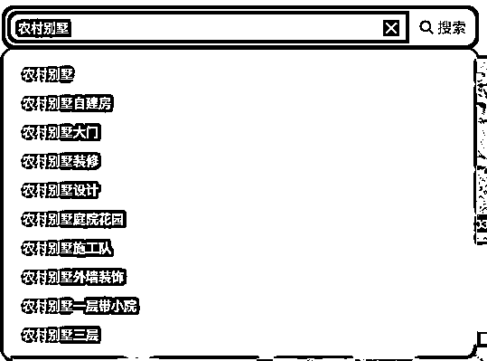
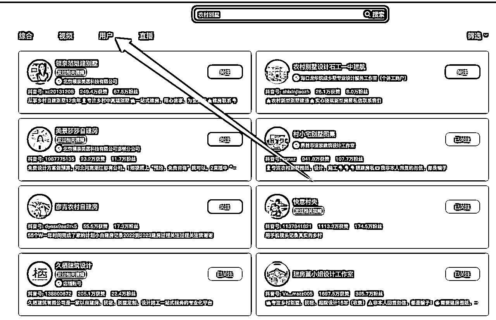
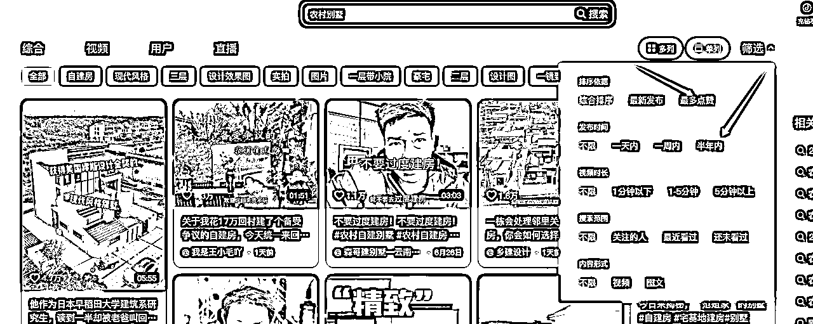
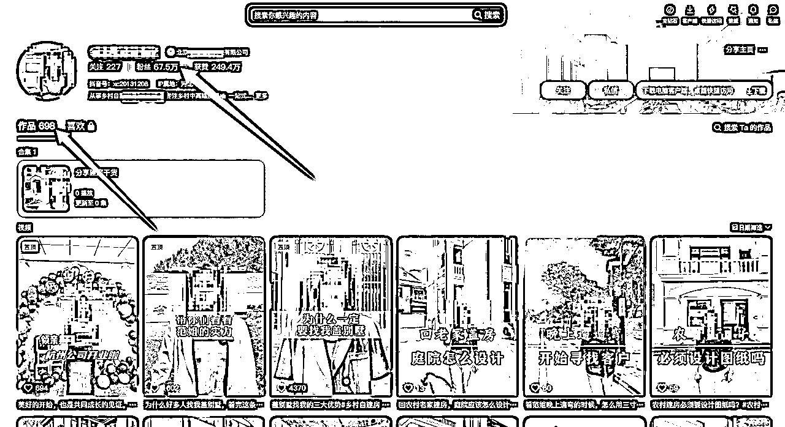
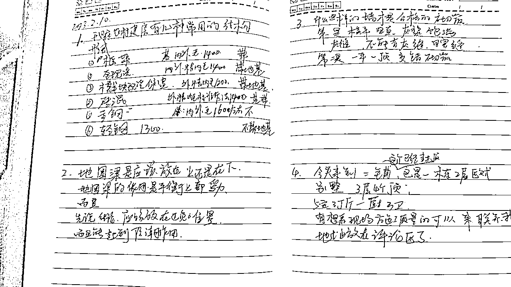
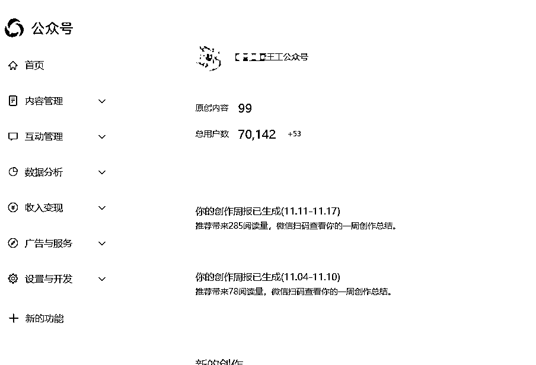

来源：https://p1m39y7kqh.feishu.cn/docx/Q76YdX281oFz0BxJnbicxnuTnZc
圈友好，我是在河南盖别墅的小王，介绍一下如何从线下到线上通过抖音获客，一年营收500w（2023年）；
结合我的经历，我想说90%的传统企业可以通过抖音获客，而且更加容易；
最开始的时候看见别人的账号发点效果图，配上音乐和文案就能有很高的播放量，类似下面的那样，（而且即便是现在，还有很多账号这样做，），当时啥也不懂，看着这么简单，我也能做，就找了对标账号（当时还没有对标的思维），结果一做播放500，期间做了很多改动，做了很多调整，做了几十个，做了一个月还是一样，没啥起色，偶尔有个高的也就是千把个播放量；甚至试了很多玄学，比如发布入口，电脑发布还是手机发布，发布时间，带的话题，标题，结果都没啥用，一度陷入深深的自我怀疑；
殊不知，别人看似简单的动作，简单的视频是有原因的，
从2021六月份开始到2022年初，七八个月粉丝一直没怎么涨，粉丝一直没啥动静；后面改变了方向才慢慢好转；
后来买了许多课程，看了很多教程，加上自己研究的进一步深入，我发现我们行业大致有三种形态，
第一种就是简单的图片加配音，或者图片切换，这种就是要矩阵化运营，拼概率，产出成本低；
第二种，是做建筑模型动画，样式新颖，讲解清楚，点赞转发都非常高，也是做的最好的，当时大概八九百万粉丝；
第三种，就是真人出镜，讲解建房的技术，也有做的很不错的同行；
我们结合自己的情况，分析利弊，
第一种这种一般是别墅设计公司，有大量的效果图，平面图供参考，我们主要是做施工，没有很多成型的效果图，各个角度的用来展示；
第二种，一般也是设计公司，需要有强大的建模能力，和建筑生长动画的制作能力，当时的我们也是不具备的，也不具参考价值；
第三种，我爸是几十年的老建筑人了，对于建筑的规范，施工工艺，方法都比较清楚，也做过好多年的大项目经理，讲话是没问题，唯一有问题的是对镜头的恐惧，但是这个是我们当时比较能够模仿的，而且能模仿到八九成的；
这里给大家一个小心得，做抖音，做引流，一定不能只看表面，要深入研究，不能只看对手简单，还要看对手在看不见的地方下了什么功夫，而且还要看我们自己有什么，从我们有什么出发，才能不那么吃力，我当时也考虑做第二种，建模动画的，但是需要补的能力太多了，当时因为全职做如果从头学，需要学习的东西太多，正反馈太慢了，尝试了一个月就放弃了；




确定方向后，就是立即实施，虽然确定了方向，但是实施的过程中也是坎坎坷坷，开始我拍摄，我一开始是把别人的文稿手动摘抄下来，到手机上，然后到现场给我爸题词，然后一句一句录制；
后来发现，经常忘词，后来采用把文稿手动写到本子上，一句一句写，有提问，有回答的形式；
开始的时候摘抄的别人的文案，因为是普通话，我们主要河南的，面对河南市场，老爸的普通话也不好，录制过两三个视频之后，就改成了我们家乡话，效果反而更好了。
第一是因为我们的目标客户本身就是河南的，
第二，我爸在完全用别人的文案的时候，说的时候不自然，就没有感染力；
现在我们做的时候，文案选题如果大致选好后，我们会自己在写一遍，然后念一遍，不追求逐字稿就行，主要通顺，逻辑正确就行了，精良口语话的表达，包括故意留置语气词，或者气口；
（给大家说个小妙招，超别人的文案的时候，可以用我们自己的话再说一遍你，通过微信识别出成文字，然后吧文字再写出来，这样的文案就是口语化的文案了，前期强烈建议大家手动抄写文案，能够快速提高自己的文案能力，现在我们看看现场，随便都能写五六个流量还行的文案）
因为开始的时候，我爸负责施工和部分直播，我负责流量（拍摄剪辑，私聊），成交（打电话，后续沟通，报价，设计等），因为出镜是我爸，我们两个一开始拍摄比较少，有时间还凑不到一起，视频的产出效率很低，后来我们经常是到工地之后一次性拍摄一周的视频，然后再慢慢发布；

通过不断的摸索，我们发现抖音最重要的就是选题，几乎决定了八成的流量，开始的时候也走了一些弯路，为了播放量而播放量，但是只有流量不行，播放量并不能给我们带来什么，我们最重要的是变现，是要客资；
不断的优化 过程中，我们把拍摄的选题内容主要分为四类
流量类视频一般是拍摄客户比较关心的问题，但是一般是点赞收藏高，转化比较低，主要用来拉高账号的权重，让更多的人知道我们，比如【农村如果想要建房，需要哪些手续】
实力+质量展示的视频，主要是讲解技术、施工过程和完成的效果，主要展示硬实力，这部分其实流量也不好，点赞收藏也不多，但是这部分一定要有，这部分一般是占两成；
签单类的视频比较简单，有客户证言最好，这部分不能太多，一般我们是一成左右；
引导客资类的视频是最多的，这部分一般是比较软的硬广，这部分也是最多的，也是最重要的，因为这部分的转化，留电话的是最多的，曾经一个视频爆掉了，让我的手机一上午接电话接到关机；
我们摸索出了一个引导客资的公式，大家可以借鉴一下：
客资视频=圈定人群+人群痛点+解决方案+购买理由+优惠活动+指令；
比如：
圈定人群：在河南地区想要建房子的朋友，
痛点：没有时间管理，对材料工艺不太了解的朋友，可以找我们，
解决方案：我们是专门做农村别墅的，包工包料包设计，保质保量保工期，
购买理由：而且现在金秋十月正是建房的好时候，材料价格便宜，建房更实惠，现在只要xx就可以建一套，
优惠活动：而且现在国庆期间还有优惠活动，到店就送xx，签单就送xx
指令：赶快点击下面的链接联系我们，还能免费领取一套图纸；
在不断的摸索过程中，到2022年初，流量开始有点起色，这时候听朋友的建议加了杠杆；
花钱买流量，破播放，几乎是引流绕不过去的门槛，初期如果人设打造的好，可以起到事半功倍的效果，我们2022年，抖加大概只投入了不到一万，但是最终引流了5000人左右；
我们最开始的流量到达5000以后，就会密切关注流量能够快速破万的视频，如果流量今天晚上发，到明天早上能够破万的，基本都会投放100-200的抖加，看看流量反馈；如果流量反馈好，再追投；
如何投抖加，我们一般是就找对标账号，然后投流量，也投过点赞转发，或者客资，效果不是太好，后期我们就是直接智能就行，效果也可以；
但是注意：抖加只是流量的杠杆，不能作为救命稻草；
在2021年辞职做抖音的阶段，长达半年的时间，疯狂的学习抖音的知识，实践应用，但是没有 一点起色，这个阶段最难的不是拍摄剪辑这些技巧方法，或者写文案，这些硬技能，
这个阶段最难的是，你不知道你做的所有动作中，那个动作是正确的，哪个动作是废动作，所有这些调整，抖音上好像都没起色，而且即便有回暖信号，当时的认知是认识不到的；
比如，开始有的时候视频能破万播放量（点赞只有几十个），但是当时对这个是没有清晰的认知的，我们对标的账号，点赞都有大几千的，当时意识不到这个样的视频在我们的那个阶段其实是可以的，是可以连续翻拍的；
所以，这个阶段，有老师很重要，有同行的人也很重要，如果没有老师，要经历一段非常难熬的时候，这个时候不但是周围的人怀疑你做的不行，你甚至会自我怀疑自己的运营是不行的，非常内耗；
我们当时甚至考虑过，把家里之施工用剩下的钢材卖掉，再支撑一个月，不行就回去上班；
幸好，因为家里人基本都很支持我，才熬过了那个阶段；
当时如果有生财有术，跟圈友，跟这里的老师交流交流，估计就不会那么焦虑了；
2021年半年的时间内，因为抖音没啥起色，我当时也尝试了其他平台，但是运营动作很少，就是把抖音发布的视频，发布到视频号，发布到快手；
2022年的某一天，我登录公众号，突然发现，我的账号粉丝已经四万多了（因为视频号链接了公众号，很多人不知道怎么关注视频号，就直接关注公众号了）
现在公众号七万多粉丝，快手基本一万粉丝，这基本是意外之喜了；
但是从侧面也说明，如果你只是想做视频号，就做视频号不要跟公众号绑定，我的视频号现在才一千多粉丝，我很确定我的粉丝都是通过视频号关注的公众号，因为刷视频号的时候你点关注不知道个关注的是视频号还是公众号（之前我考虑是视频号人群年龄偏大的问题，后来我发现不是的，我有时候都分区清楚，我将要点击的关注是公众号是视频号，我问了好几个同时或者朋友，他们也区分不开，只有个别很关注自媒体的才分得清楚）

比如我们2022年三月份，流量慢慢好了起来，两三个月基本引流了3000-4000人，但是因为运营和销售都是我们，所以流量承接就跟不上，很多因为没有及时回复，或者忘记回复就错过了；
全国乡村新建住房大概在200万栋左右，现在乡村住宅大概的造价在20-100万不等，这个是个不容忽视的万亿级别是市场；
从今年开始，我们县城进场的建别墅的至少有10家以上，因为大家都看见了这个市场，因为建房子是个风气问题，而且我们去考察，别人的农村，小别墅大概在60%左右的房子，我们这边一个村子只有一两家，从这个角度看，市场也是很大的；
但是据我的观察，这个行业只能到达3000万左右的规模，再大的规模，好像因为行业的固有模式，支撑不了太大的企业，我的观察大概从两个方面：
第一是目前行业没有有能够到达5000万体量的公司，之前也有个企业，是要做成全国性的，但是因为别墅面积小，而且项目比较分散，管理成本非常高，最终导致暴雷，现在已经转型了；现在业内也 有企业在尝试做合作联营的方式，但是说实话有点收割加盟费的味道，没有落地可行的突出优势；按照均价30万，每年做100栋才能达到30万的量级，但是100栋的别墅落地，是非常考验施工管理能力的，因为把控的细节太多了，所以目前还没看到有能力做到这样的企业；
第二是我从施工管理阶段考虑，乡村别墅跟商品房不一样，没办法大量集中的建造，而且建造的意图都不太一样，到目前为止我们还没有建国两栋一样的房子，所以基本是一宅一设计，很难做到标准化；再有就是施工队伍的组建，施工人员的配备问题，最优的解决方案，就是施工范围控制在50公里范围内，做到范围内的第一，然后拿到大部分的订单，集中交付，才能降低交付成本；
后续如果能够有人把50公里范围内的引流，成交，回款，交付，这个完整的流程稳定的跑好，就可以多点开花，这样是有可能突破3000万；
从今年进入行业的人来看，鱼龙混杂，有之前从事装修的，有之前开挖机的，几个人一商量就开个公司开始干的，也有原来做民房的，当然也有原来做过商品房的（大的开发商其实估计看不上这但规模，虽然总体规模很大，但是不能集中变现），因为回款比较快，有的人进入来的人不知道施工中的风险在哪里，以为收到款了钱就是自己的了，花钱大手大脚，现在已经有很多公司暴雷了，后续施工跟不上，材料款都付不了，跟刚开始的房地产差不多；
如果有过商品房，或者工程施工、管理经验的人还是可以做，但是要谨慎，最终要以客户满意的交付为标准，发心要正，不然不但会坏了名声，还会做烂了行业；
单纯从抖音来看，现在还是可以做，只是比原来更加卷了，之前很少有真人出镜，现在基本都是老板亲自上，真人出镜，之前做的比较好的，原来就是一个手机就开播了，现在都开始绿幕直播了，搭建的直播间更加专业了，但是相对于女装、数码，这些专业的短视频运营和直播，我们这个行业还是算是粗狂的运营，对大多数传统行业来说都是这样；
因为在工作中会接触到一些做门窗、做瓦、做地砖的传统企业，现在的营销方式基本还是靠介绍，靠再路边做广告牌，这样传统的方式，有极少数做视频，做的也是随手拍，甚至在视频上直接留电话硬拍的方式，但是据我了解，即便是这样在专业人士看来 有点儿戏的方式，确实能够引流，确实能够变现；所以短视频、直播+传统行业还是有很大的空间的；
不过有的人即便是不这样做，也过的很舒服，比如我们的琉璃瓦的供应商，每天就是穿着拖鞋，开着宝马去他的仓库，打电话发货，进货，什么抖音、视频号，完全不在乎，因为够吃了；
所以如果你是刚入行的新人，你掌握了更好的传播渠道，还是有生意给你做的；